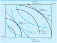

Week 10: Welfare Economics and Policy Evaluation
DSAN 5450: Data Ethics and Policy
Spring 2026, Georgetown University
Wednesday, March 25, 2026
Foreshadowing Next Week / HW4

In the stu (RStudio), cooken up some üî• for yall. Bringing data (.csv files) back into all this econ game theory nonsense
Descriptive Ethics: Foreshadowing W14
\[ \DeclareMathOperator*{\argmax}{argmax} \DeclareMathOperator*{\argmin}{argmin} \newcommand{\bigexp}[1]{\exp\mkern-4mu\left[ #1 \right]} \newcommand{\bigexpect}[1]{\mathbb{E}\mkern-4mu \left[ #1 \right]} \newcommand{\definedas}{\overset{\small\text{def}}{=}} \newcommand{\definedalign}{\overset{\phantom{\text{defn}}}{=}} \newcommand{\eqeventual}{\overset{\text{eventually}}{=}} \newcommand{\Err}{\text{Err}} \newcommand{\expect}[1]{\mathbb{E}[#1]} \newcommand{\expectsq}[1]{\mathbb{E}^2[#1]} \newcommand{\fw}[1]{\texttt{#1}} \newcommand{\given}{\mid} \newcommand{\green}[1]{\color{green}{#1}} \newcommand{\heads}{\outcome{heads}} \newcommand{\iid}{\overset{\text{\small{iid}}}{\sim}} \newcommand{\lik}{\mathcal{L}} \newcommand{\loglik}{\ell} \DeclareMathOperator*{\maximize}{maximize} \DeclareMathOperator*{\minimize}{minimize} \newcommand{\mle}{\textsf{ML}} \newcommand{\nimplies}{\;\not\!\!\!\!\implies} \newcommand{\orange}[1]{\color{orange}{#1}} \newcommand{\outcome}[1]{\textsf{#1}} \newcommand{\param}[1]{{\color{purple} #1}} \newcommand{\pgsamplespace}{\{\green{1},\green{2},\green{3},\purp{4},\purp{5},\purp{6}\}} \newcommand{\pedge}[2]{\require{enclose}\enclose{circle}{~{#1}~} \rightarrow \; \enclose{circle}{\kern.01em {#2}~\kern.01em}} \newcommand{\pnode}[1]{\require{enclose}\enclose{circle}{\kern.1em {#1} \kern.1em}} \newcommand{\ponode}[1]{\require{enclose}\enclose{box}[background=lightgray]{{#1}}} \newcommand{\pnodesp}[1]{\require{enclose}\enclose{circle}{~{#1}~}} \newcommand{\purp}[1]{\color{purple}{#1}} \newcommand{\sign}{\text{Sign}} \newcommand{\spacecap}{\; \cap \;} \newcommand{\spacewedge}{\; \wedge \;} \newcommand{\tails}{\outcome{tails}} \newcommand{\Var}[1]{\text{Var}[#1]} \newcommand{\bigVar}[1]{\text{Var}\mkern-4mu \left[ #1 \right]} \]
Thucydides and the Kindly Slavemaster
[What is] right, as the world goes, is only in question between equals in power; otherwise, the strong do as they please and the weak suffer what they must. (Thucydides 2013 c. 411 BC) (Think of necessary vs. sufficient conditions!)
| liberalism | republicanism | ||
|---|---|---|---|
| Definition of Injustice | Strong do bad things (Berlin 1959) | Strong can do bad things (Skinner 1998; Pettit 1997; Lovett 2022) | |
| Thucydides Question | Strong do as they please \(\overset{?}{\Rightarrow}\) Strong do bad things |
Strong do as they please \(\overset{?}{\Rightarrow}\) Strong can do bad things |
|
| Answer | No, not necessarily! | Yes, necessarily! | |
| Frederick Douglass | My feelings [towards slave masters] were not the result of any marked cruelty in the treatment I received… | …they sprung from the consideration of my being a slave in the first place. It was slavery—not its mere incidents—that I despised. (Douglass 1855) | |
| A Doll’s House | Our home is nothing but a playroom. I have been your doll-wife, just as at home I was papa’s doll-child; and here the children have been my dolls. (Ibsen 1879) | ||
Relevance for This Week (Where We Left Off)
- Can we develop policy interventions that equalize power, so that world looks like normative ethics from W03-W08 (“what is right”)?
- (Hidden antecedent: non-Nietzschean ethical framework e.g. Utilitarianism/Kant)
- Point of prev slide: From now til W14, keep in mind how definition of power (and hence “effectiveness” of policy intervention) depends on antecedent
- liberal definition \(\Rightarrow\) focus on equilibria (no injustice if bad thing doesn’t happen in equilibrium)
- republican definition \(\Rightarrow\) also take off-equilibrium possibilities into account (no injustice if bad thing doesn‚Äôt happen in equilibrium and doesn‚Äôt happen if one player deviates ‚Äúon a whim‚Äù) (Jacobs and Naidu 2025 üòâ)
- Prisoners‚Äô Dilemma üò´ \(\prec\) Assurance Game ü§® \(\prec\) Invisible Hand Game ü•≥
Prisoners’ Dilemma (Fishers’ Dilemma)
- Single, unique Nash equilibrium, and it’s Pareto inferior
The Game
| \(j\) | |||
| Fish 6 Hours | Fish 8 Hours | ||
| \(i\) | Fish 6 Hours | \(1.0,1.0\) | \(0.0,\boxed{1.2}\) |
| Fish 8 Hours | \(\boxed{1.2}, 0.0\) | \(\boxed{0.4},\boxed{0.4}\) | |
- Boxes = Best Responses:
- \(\text{BR}_i(6\textrm{ hr}) = 8\textrm{ hr}\), \(\text{BR}_i(8\textrm{ hr}) = 8\textrm{ hr}\)
- \(\text{BR}_j(6\textrm{ hr}) = 8\textrm{ hr}\), \(\text{BR}_j(8\textrm{ hr}) = 8\textrm{ hr}\)
Pareto Dominance

Operationalizing Power
- Equally good outside options \(\implies\) can contract to Pareto-optimal point \(o^P\)
- \(i\) has better outside options \(\implies\) can make take it or leave it offer to \(j\):
- “You (\(j\)) fish 6 hrs all the time. I (\(i\)) fish 6 hrs 41% of time, 8 hrs otherwise”
- Ever so slightly better for \(j\) \(\implies\) \(j\) accepts (Behavioral econ: \(j\) accepts if 41% meets subjective fairness threshold; observed across many many cultures!)
- Later / next week: observe policy with outcome \(o^{C}_{i \rightarrow j} \iff\) policy values \(i\)’s welfare more than \(j\)’s welfare (inferred social welfare weights \(\omega_i > \omega_j\))

Policy Interventions: Fish Dilemmas \(\mapsto\) Assurance Games
- Notice: To “escape” prisoners’ dilemma, we had to literally change the rules of the game (permanent intervention)
- Fishers’ Dilemma:
- No institutions: \(a_i, a_j \in \{6\text{ hr}, 8\text{ hr}\}\)
- Institutions (courts or social norms): \(\{\text{Accept}, \text{Reject}\}\)
- Driving “game”:
- No institutions: \(a_i, a_j \in \{\text{Stop}, \text{Drive}\}\)
- Institutions (stoplights installed by govt or community agreement): \(a_i, a_j \in \{\text{Obey Light}, \text{Run Light}\}\)
- Within assurance games, only need to nudge (one-time intervention) \(\leadsto\) new equilibrium (self-enforcing by definition)
Assurance Game
- Multiple equilibria; the particular outcome we observe is a function of history (path dependency)
- Drive-on-left vs. drive-on-right: Assurance game where neither equilibrium Pareto-dominates other option
- Swedish Dagen H: Nudge from \(a^*_{\textsf{L}} = (\textsf{L},\textsf{L})\) to \(a^*_{\textsf{R}} = (\textsf{R},\textsf{R})\)
- Either eq is self-reinforcing! (Unless you want to crash out)
- QWERTY vs. DVORAK / Palanpur farmers: Assurance game where observed equilibrium Pareto inferior
| \(j\) | |||
| Early | Late | ||
| \(i\) | Early | \(\boxed{4},\boxed{4}\) | \(0, \, 3\) |
| Late | \(3, \, 0\) | \(\boxed{2},\boxed{2}\) | |
Invisible Hand Game
- Single, unique Nash equilibrium, and it’s Pareto efficient
- \(\Rightarrow\) Acting in self interest \(\leadsto\) best possible outcome
It is not from the benevolence of the butcher, the brewer, or the baker that we expect our meal, but from their regard to their own interest (Smith 1776)
| \(j\) | |||
| Corn | Tomato | ||
| \(i\) | Corn | \(2, \, 4\) | \(4, \, 3\) |
| Tomato | \(\boxed{5}, \boxed{5}\) | \(3, \, 2\) | |
- Wealth of Nations SPOILER: The wealth comes from division of labor
and also dumbleydore dies. semperus snake too. and even poor ron the weasel, who never deserved such a fate
An economic transaction is a solved political problem. Economics has gained the title “Queen of the Social Sciences” by choosing solved political problems as its domain. (Lerner 1972)
First Fundamental Theorem of Welfare Economics
Thm: [Antecedents (Coase Conditions)] \(\Rightarrow\) markets produce Pareto-optimal outcomes
- Even Jeff finds proof (and corollaries) compelling / convincing / empirically-supported
- (It’s a full-on proof, in the mathematical sense, so doesn’t rly matter what I think; I just mean, imo, important and helpful to think through for class on policy!)
- Ex: Conditional on antecedents [(Coase) minus (perfect competition) plus (thing must be allocated via markets)], \(\uparrow\) Competition \(\leadsto\) More efficient allocations
- Like how Gauss-Markov Assumptions \(\Rightarrow\) OLS is BLUE, yet our whole field (at least, a whole class, DSAN 5300) built on what to do when GM Assumptions don’t hold
- For policy development, helpful to think through
- which cases “break” FFT (more honored in the breach)
- How each violation might be “fixed” through policy
- Our violation: No externalities assumption
- Possible policy “fixes”: property rights, market-socialist nationalization
Part 2 Suddenly Collides with Part 1: Property Rights
- Rawlsian Rights: Vetos on societal decisions; Constitution can make some inalienable (can’t sell self into slavery), some alienable
- Property rights: alienable. You can gift or sell the rights if you want (veto is over society just, like, taking your property if someone else would be happier with it)
Case : Society decides Right to Clean Air \(\prec\) Right to Smoke \(\Rightarrow\) Start at \(E\)
- \(A\) can pay \(B\) to alienate right (Pay $50/month, can smoke 5 ciggies) \(\leadsto\) \(X\)
- Movement along light blue curve: giving up \(x\) money for \(y\) smoke, equally happy. \(u_A(p)\) identical for \(p\) on curve
- Movement to higher light blue curve () \(\Rightarrow\) greater utility \(u_A' > u_A\)
Case Society decides Smoke \(\prec\) Clean Air \(\Rightarrow\) Repeat for \(E' \leadsto X'\)

Externalities \(\Leftrightarrow\) Costs of Actions Paid by Someone Else!
- Firm \(S\) produces amount of steel \(s\), pollution \(x\)
- Firm \(F\) “produces” amount of fish \(f\)
- \(S\) optimizes
\[ s^*_{\text{Priv}}, x^*_{\text{Priv}} = \argmax_{s,x}\left[ p_s s - c_s(s, x) \right] \]
- While \(F\) optimizes
\[ f^*_{\text{Priv}} = \argmax_{f}\left[ p_f f - c_f(f, x) \right] \]
- If [Yugoslavia-style] nationalized, new optimization of joint steel-fish venture is
\[ s^*_{\text{Yugo}}, f^*_{\text{Yugo}}, x^*_{\text{Yugo}} = \argmax_{s, f, x}\left[ p_s s + p_f f - c_s(s, x) - c_f(f, x) \right] \]
- Can prove/“prove” that \(o(s^*_{\text{Yugo}}, f^*_{\text{Yugo}}, x^*_{\text{Yugo}})\) Pareto-dominates \(o(s^*_{\text{Priv}}, x^*_{\text{Priv}}, f^*_{\text{Priv}})\)
Functionals?
- You probably know what a function \(f(x)\) is; a functional is a function of functions: \(\mathscr{G}(f)\)
- It’s from math, which is scary, but it’s just notation to remind us that we’re analyzing functions of functions
- In our case, they “work the same way” as regular functions, e.g., \(\mathscr{G}(f,g) = f^2 + g^2\), so \(f(x) = x, g(x) = 2x \Rightarrow \mathscr{G}(f,g)(x) = x^2 + 4x^2 = 5x^2\)
We Live In A Society, Part 2
- Utilitarianism, Kantian Ethics, and Rawls can all be modeled as Social Welfare Functionals
\[ W(\mathbf{u}) = W(u_1, \ldots, u_n) \Rightarrow W(\mathbf{u})(x) = W(u_1(x), \ldots, u_n(x)) \]
- \(u_i(x)\): Given bundle of resources \(x\), how much utility does \(i\) experience? \(u_i: \mathcal{X} \rightarrow \mathbb{R}\)
- \(W(\mathbf{u})\): Aggregates \(u_i(x)\) over all \(i\), to produce measure of overall welfare of society. \(W: (\mathcal{X} \rightarrow \mathbb{R})^N \rightarrow \mathbb{R}\).
- \(W(\mathbf{u}) = \sum_{i=1}^n \omega_iu_i(x)\). \(\omega_i\) is \(i\)’s welfare weight
- (Preview) Decomposition: evaluate policies by estimating marginal utility \(u'_i(x)\) compared to \(\omega_i\))
Alternative SWF Specifications
- Social values
\[ W(\underbrace{v_1, \ldots, v_n}_{\text{Values}})(x) \overset{\text{e.g.}}{=} \omega_1\underbrace{v_1(x)}_{\text{Privacy}} + \omega_2\underbrace{v_2(x)}_{\mathclap{\text{Public Health}}} \]
- Stakeholder Analysis
\[ W(\underbrace{s_1, \ldots, s_n}_{\text{Stakeholders}})(x) = \omega_1\underbrace{u_{s_1}(x)}_{\text{Teachers}} + \omega_2\underbrace{u_{s_2}(x)}_{\text{Parents}} + \omega_3\underbrace{u_{s_3}(x)}_{\text{Students}} + \omega_4\underbrace{u_{s_4}(x)}_{\mathclap{\text{Community}}} \]
- (Adapted from this great intro video!)
Utilitarian SWF
- Easy mode (possibly/probably your intuition?): Everyone’s welfare weight should be equal, \(\omega_i = \frac{1}{n}\)
\[ W(u_1, \ldots, u_n)(x) = \frac{1}{n}u_1(x) + \cdots + \frac{1}{n}u_n(x) \]
- \(\implies\) Utilitarian Social Welfare Functional!
- The Silly Problem of Utilitarian SWF: What if everyone is made happy by \(u_{\text{Jeef}} = -\infty\)?
The Hard Problem of Utilitarian SWF
While the rhetoric of “all men [sic] are born equal” is typically taken to be part and parcel of egalitarianism, the effect of ignoring the interpersonal variations can, in fact, be deeply inegalitarian, in hiding the fact that equal consideration for all may demand very unequal treatment in favour of the disadvantaged (Sen 1992)
- \(\implies\) “Equality of What?”
- What is the “thing” that egalitarianism obligates us to equalize (the equilisandum/equilisanda): Utility? Opportunity? Resources? Money? Freedom?
Policy Evaluation via Inverse Fairness
We Can Finally Understand This Image from Week 1!

References
DSAN 5450 Week 10: Welfare Economics and Policy Evaluation
Social Welfare Functionals